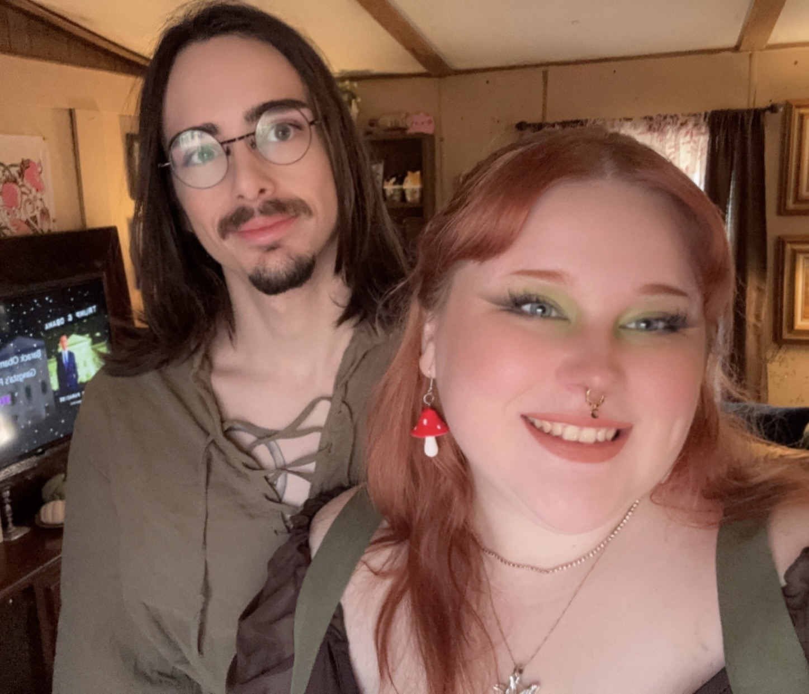
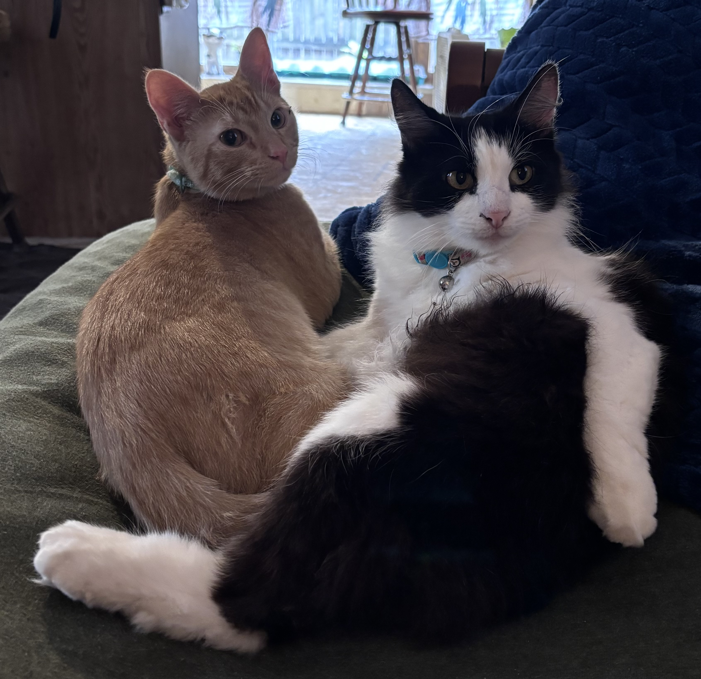

Firstly, I have to put a spotlight on my partner. He is the silliest, most patient, and creative person I have the pleasure to know. I look up to him in every way, admiring the way he can carry himself so confidently in anything he does. He's also real smart so any time I feel lost or confused, he holds the torch and guides me back north. 
Now I'll introduce my kitties! Cali (black/white) and then Gimli (orange) are the best babies I could ever ask for. They love to cuddle in bed with mom and dad (when Gimli isn't getting into mischief), and watch tv/movies on the big screen! Cali is polydactyl, which means she has two extra toes on each foot! That makes her our little thumb monster, and she even doesn't mind if you hold her little hand. 